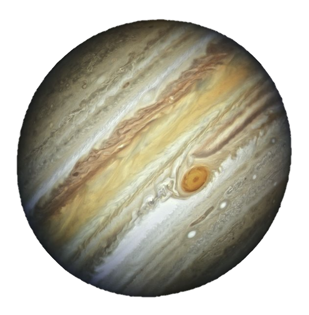

Volver
|  |
DefiniciónJúpiter, con más del doble de la masa que el resto de planetas juntos, es el planeta más grande del sistema solar por lo que como no podía ser de otra manera recibe su nombre del dios entre los dioses del Olimpo, Zeus; Júpiter en la mitología romana. Además, puede decirse que Júpiter, con 79 lunas identificadas hasta el momento orbitando a su alrededor, muchas de ellas nombradas en honor a las amantes del dios, es un pequeño sistema solar en miniatura. Características principales del planeta JúpiterEl planeta Júpiter es el coloso por excelencia del sistema solar. De hecho, en Júpiter todo alcanza magnitudes exorbitantes. Para hacernos una idea, con un diámetro ecuatorial de cerca de 140.000 kilómetros, en torno a la línea del ecuador de Júpiter cabrían hasta 11 planetas Tierra puestos en fila. Junto a Saturno, se trata de uno de los dos planetas gigantes gaseosos del sistema solar, pero no todo lo grandioso en Júpiter tiene que ver con su tamaño. La velocidad a la que gira este coloso del sistema solar también es endiablada, pues no solo hay que tener en cuenta que el día en Júpiter dura apenas unas escasas 10 horas mientras que en la Tierra un día dura 24 horas, sino también que su radio es 10 veces mayor que el de nuestro planeta. La gravedad en Júpiter es también descomunal, concretamente dos veces y media mayor que en nuestro planeta, es decir, un ser humano que en la Tierra pesara 80 kilogramos, en Júpiter pesaría 200. No se trata de una simple curiosidad, pues ahora sabemos que la enorme gravedad que impera en Júpiter funciona como un escudo antiasteroides para los planetas interiores del sistema solar. Júpiter es un planeta tan colosal que, de hecho, más que un planeta, es un pequeño sistema planetario en si mismo. Y si bien los científicos defienden que por sus características sería altamente improbable encontrar vida en el gigante de sistema solar, no descartan que la vida pudiera desarrollarse en alguna de sus 79 lunas, entre las cuales destacan Europa, Ganímedes, Ío y Calisto, bautizadas en honor a las amantes del dios Zeus. Estructura interna, geología y composición del planeta JúpiterComo es apreciable, Júpiter es un mundo supermasivo, pero compuesto por elementos ligeros, principalmente Helio e Hidrógeno, la misma composición que el Sol, pero ¿se trata de un planeta formado exclusivamente por gas? La respuesta es que todavía se desconoce la naturaleza del interior del planeta, pero los científicos barajan la posibilidad de que Júpiter alberge un núcleo sólido en su interior, aunque de ser así, es probable que "solo" tenga el tamaño de la Tierra. En lo profundo de la atmósfera, la presión y la temperatura aumentan enormemente, comprimiendo el hidrógeno gaseoso en su forma líquida, lo que otorga a Júpiter el océano más grande del sistema solar, conformado por hidrógeno en lugar de por agua. Los científicos también creen que a mayor profundidad la presión se vuelve tan grande que los electrones son expulsados de los átomos de hidrógeno, haciendo que el líquido actúe como un conductor eléctrico, tal y como se comporta un metal, lo que le otorga un campo magnético mastodóntico e irregular. De hecho, el campo magnético de Júpiter ha dejado atónitos a los científicos, ya que es unas diez veces más fuerte que el campo magnético más poderoso de la Tierra. La atmósfera de JúpiterSin duda, uno de los aspectos más fascinantes de Júpiter es su atmósfera, principalmente compuesta de hidrógeno en más de uno 80% además de grandes proporciones de helio, metano, amoniaco y etano. Los fenómenos que suceden en la atmósfera de Júpiter son insólitos y muchos de ellos inexplicables. De hecho, Júpiter es conocido por sus distintivos cinturones y zonas: bandas de nubes blancas y rojizas que envuelven el planeta y le dan un aspecto realmente impresionante. Se cree que las bandas más oscuras se corresponden con columnas de gases que contienen azufre y fósforo que se elevan desde el interior más cálido del gigante gaseoso. También es muy probable que Júpiter no tenga una, sino tres capas de nubes repartidas en la parte más baja de su atmósfera, la cual, en su totalidad, puede elevarse hasta los 1.000 kilómetros. Así, los astrónomos creen la capa más interna de la atmósfera joviana podría estar formada por hielo y vapor de agua, la capa intermedia probablemente esté conformada por cristales de hidrosulfuro de amonio y la capa superior por hielo de amoníaco. Esta también es la causa de los fuertes vientos que se producen en la atmósfera de Júpiter, los cuales en el ecuador del planeta pueden alcanzar hasta los 540 kilómetros por hora, dando lugar a las tormentas más impresionantes del sistema solar, como es el caso de la Gran Mancha Roja, una tormenta que según los científicos lleva activa más de 300 años y en la cual cabrían 2 planetas como la Tierra. En la atmósfera de Júpiter también son observables las auroras boreales, con la salvedad, eso si, de que las auroras en Júpiter son muchos más grandes que las de nuestro planeta y mucho más energéticas. Además, por extraño que parezca son continuas. La exploración del planeta JúpiterEl comienzo de la exploración de Júpiter, el gigante gaseoso del sistema solar, se remonta a los años 1973 y 1974, momento en que las sondas Pioneer 10 y 11 de la NASA obtenían las primeras imágenes y observaciones directas del satélite. En los años 1977 y 1979, dos nuevas sondas, respectivamente las Voyager 1 y 2, volvían para visitar el coloso y algunas de sus lunas en su ruta hacia el exterior del sistema solar. Para acceder a la atmósfera del planeta, gracias a la misión Galileo, hubo, no obstante, que esperar hasta finales de los años 80, También, para obtener nuevos datos de su magnetosfera, los cuales fueron proporcionados por la misión Ulises en 1992. Ya en el presente milenio, las misiones más sonadas a Júpiter fueron llevadas a cabo por la sondas Cassinni y New Horizonts durante sus respectivos viajes a Saturno y Plutón. Hoy en día, la misión más importante en Júpiter es llevada a cabo por la sonda Juno, la cual llegó a la órbita del planeta el 5 de julio de 2016, y está dedicada en exclusiva al gigante gaseoso. Curiosidades sobre el planeta Júpiter
|
Fuente: National Geographic
Volver